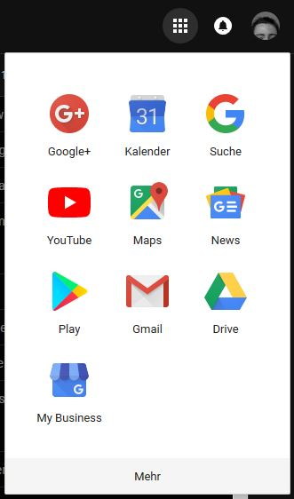

Web Components
Are we there yet?
Christian Köberl / github.com/derkoe / @derkoeWeb Component Standards:
Custom Elements, Shadow DOM & Co
When to use Web Components
Implementing Web Components
Future?
Christian Köberl
All-End Developer
Develops web apps since 1999
Web Component Standards
Custom Elements
Shadow DOM
HTML Templates
HTML Imports
CSS Variables
Custom Elements
<script src="dk-tabs.js"></script>
<dk-tabs>
<dk-tab title="Tab 1">This is tab one</dk-tab>
<dk-tab title="Tab 2"><h2>Antoher tab</h2></dk-tab>
</dk-tabs>Custom Elements
Shadow DOM
Shadow DOM

HTML Templates
Parse HTML only once
<template id="item-template">
<div>Whatever content you like</div>
</template>const templ = document.getElementById('item-template')
for (let i = 0; i < 100; i++) {
const node = document.importNode(templ.content, true)
elm.appendChild(node);
}
HTML Templates
CSS Variables
Declare a variable
element { /* or use pseudo selector :root */
--background-color: #3f0;
}Use variable
element {
background: var(--background-color, #9E9E9E);
}CSS Variables
Polyfills / Shims
@webcomponents/webcomponentsjs
Full suport for Custom Elements, Shadow DOM and Templates,~100kB minified, 31kB zipped Only Custom Elements (used by @angular/elements),
~14kB minified, 6kB zipped
When to use Web Components
Reusable Web Thingies
Former jQuery Plugins
Examples: gallery, date-picker
UI Frameworks
Your in-house component framework
App Navigation
Your whole app
Implementing
Web Components
Options
- Native API (Custom Elements / Shadow DOM)
- Lib / Compiler
Stencil.js, SkateJS, Polymer, LitElement - Framework
Angular, Vue, Svelte, ...
Native API
Demo
Stencil
@Component({
tag: 'my-hello',
styleUrl: 'my-hello.css',
shadow: true
})
export class HelloComponent {
@Prop() name = 'world';
render() {
return (
Hello, {this.name}
);
}
}LitElement
@customElement('my-hello')
class HelloComponent extends LitElement {
@property() name = 'world';
render() {
return html`
Hello, ${this.name}
`;
}
}Lib / Compilers
Source: www.npmtrends.comFrameworks
Build component in your framework of choice
Using Web Components
Thanks! Questions?
github.com/derkoe / @derkoeImage Credits
- Title Christian K√∂berl: © Christian K√∂berl
- All others © Porsche Informatik